1987– 1992Образование
ЕГ „Бертолт Брехт“, Пазарджик
Езикова гимназия с немски език
Пловдив · преподава от 1997 г.
Преподавам история и цивилизации в СУ „Св. Паисий Хилендарски“. Учениците ми работят с исторически извори, дигитални карти и собствени проекти.
Организирам междупредметни уроци с колеги от други предмети и говоря редовно с родителите, когато ученето затруднява някого.
„Тръгне ли човек с чисти подбуди към нещо, винаги успява.“Невена Коканова, любим цитат на Елена
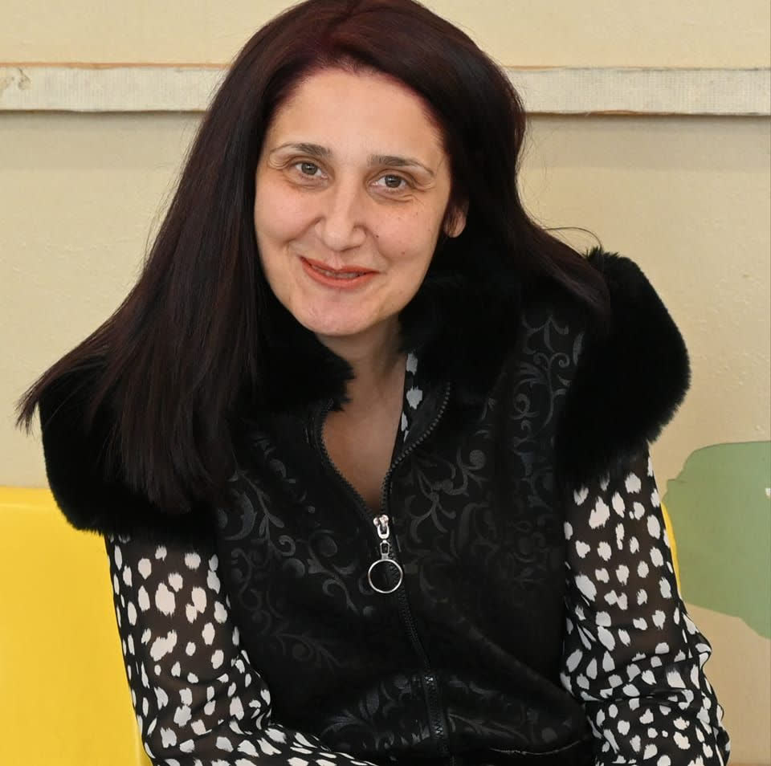
Езикова гимназия с немски език
ВТУ „Св. Св. Кирил и Методий“, специализация „Древност и археология“
Учител по история и цивилизации
Учител по история и цивилизации
Учител по история и цивилизации
СУ „Св. Климент Охридски“, Факултет по класически и нови филологии
Учител по история и цивилизации
Учениците получават исторически въпрос и сами търсят причините и следствията. Пример: урокът „Чудесата на Древния свят“ по история и английски.
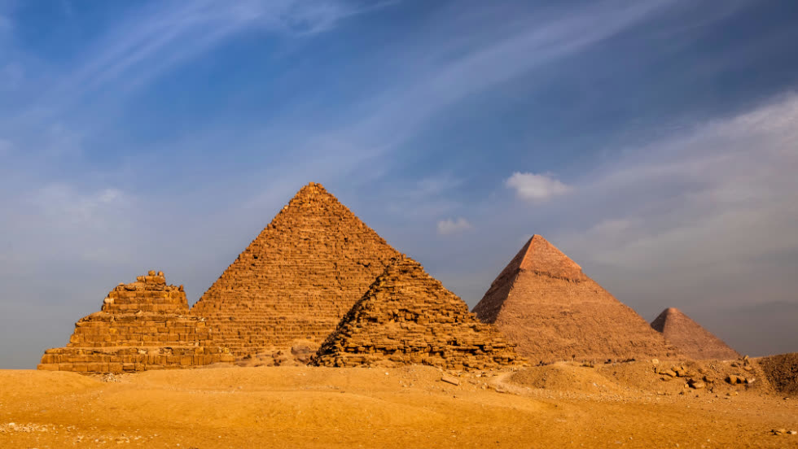
Дискусии, ролеви игри и работа в екип. На открития урок в РИМ – Пловдив учениците проведоха виртуално интервю с Панайот Волов.
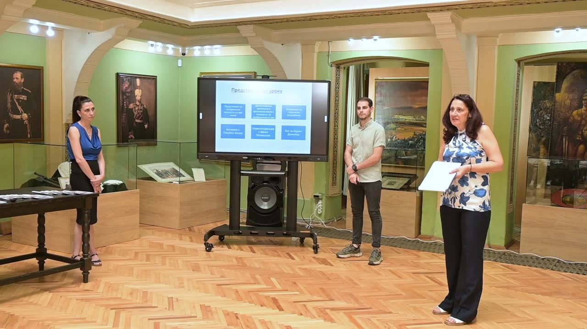
Учениците правят свои проекти и ги защитават пред класа. Така се събра дигиталната книжка „Животът и дейността на Кирил и Методий“.
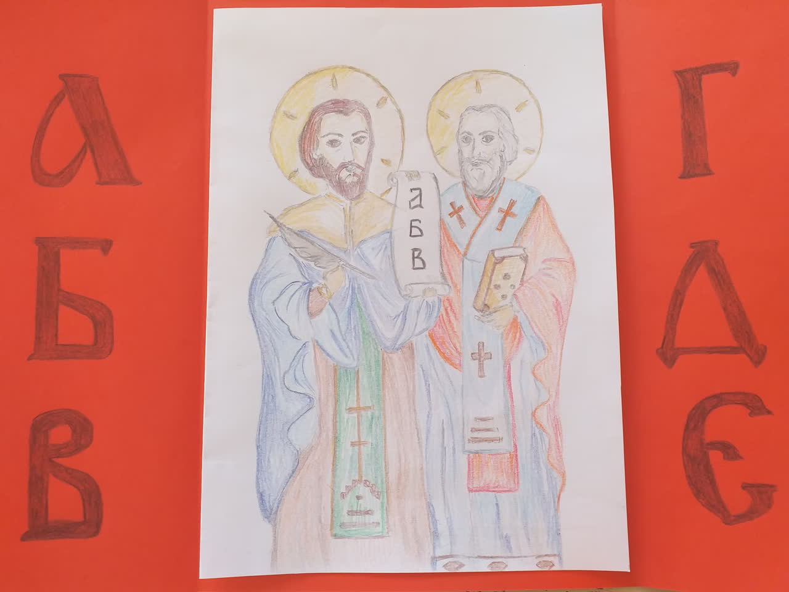
Философия на преподаване
Историята е повече от факти и дати. Уча учениците да търсят причините, да четат изворите и да свързват миналото с днешния ден.
Карти, галерии и работни листове, които учениците отварят в час и вкъщи.
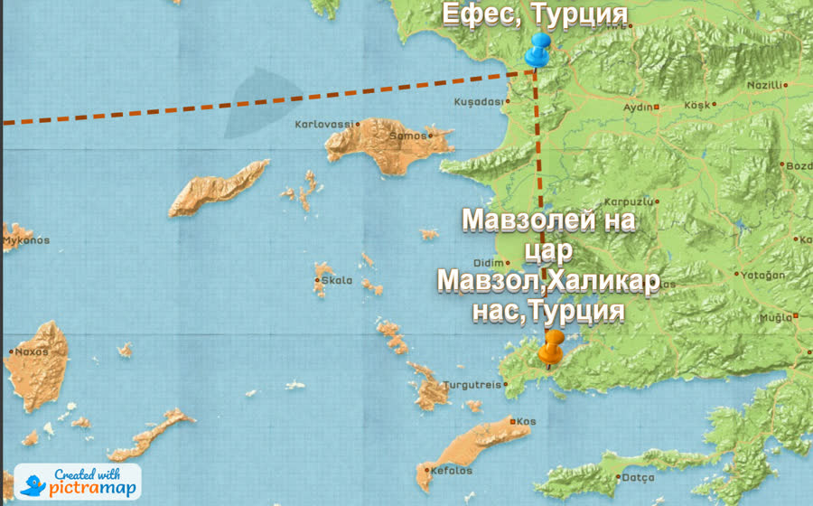
Историческа карта в Pictramap: всяко чудо на света стои на мястото си.
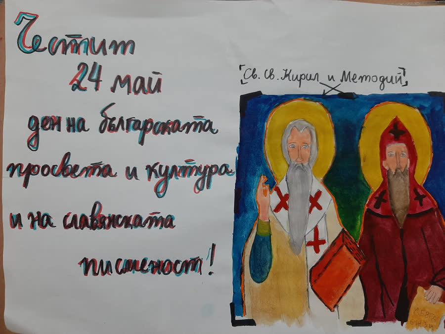
Рисунки и текстове на ученици за Кирил и Методий, събрани в Padlet.
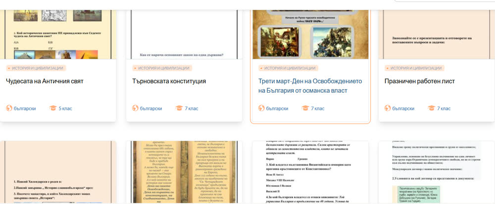
Работни листове в Liveworksheets, които проверяват отговорите веднага.
Екскурзии, открити уроци, постановки и обучения с колеги и ученици.
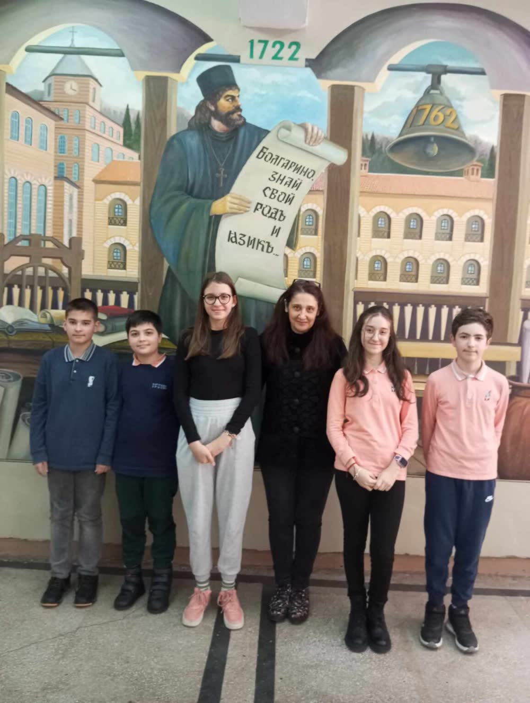
Първо, второ и трето място на областния кръг на олимпиадата по история.
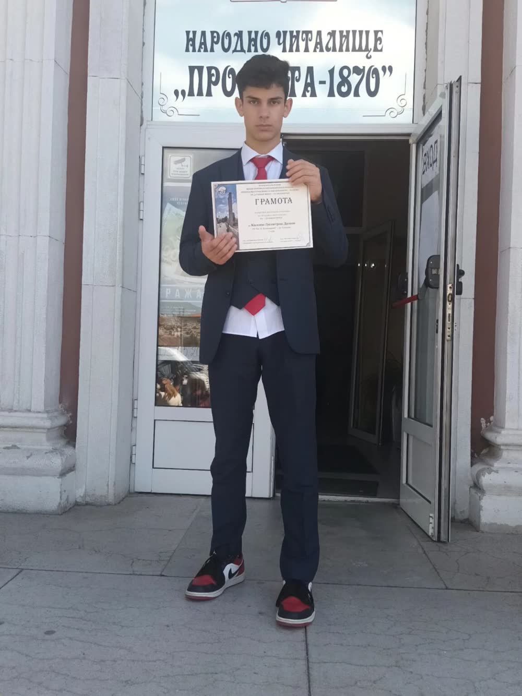
Четвърти резултат в страната на националния кръг на олимпиадата по история и цивилизации.
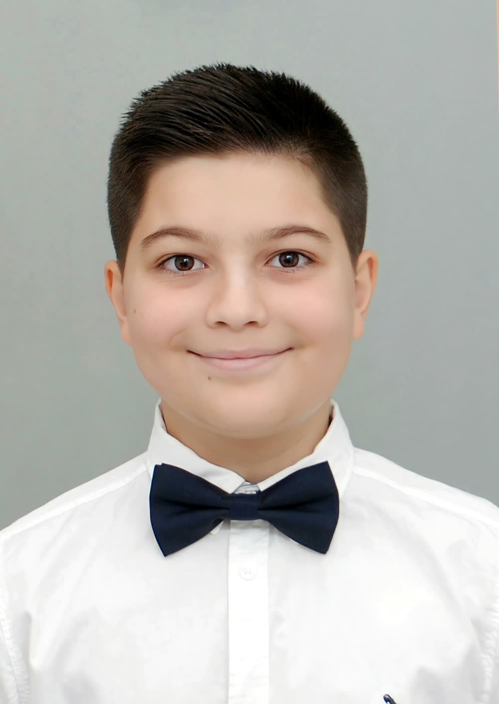
Трето място на областния кръг на олимпиадата по история и цивилизации.
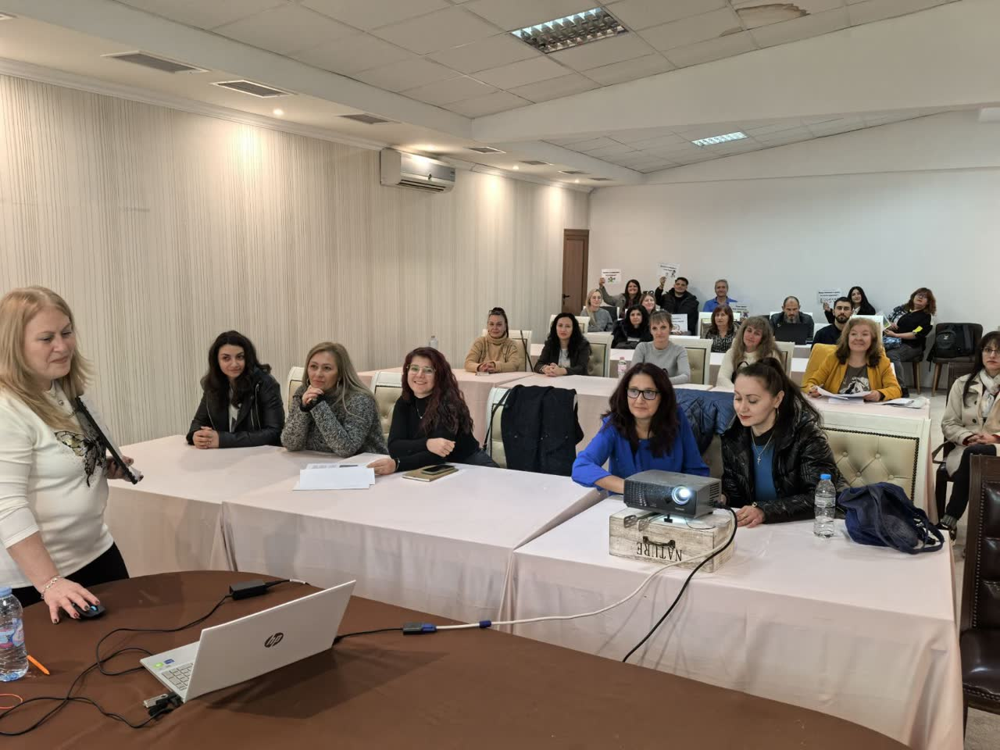
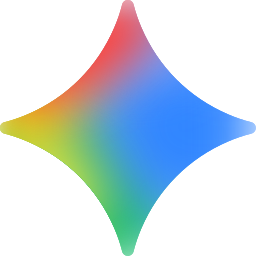
GeminiСъщо Padlet, Pictramap, Book Creator, Liveworksheets, Genially, Canva, NotebookLM, Gamma, Mango AI, Google Sites и MyHeritage.